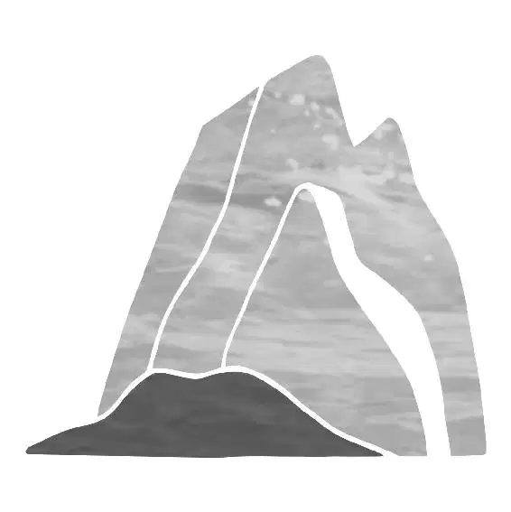

Using her wayfinding skills, Moana sailed into the morning. As her boat rode over huge rolling swells, she spotted the ring of barrier islands surrounding Te Fiti in the distance. When she approached, she found a gap wide enough for her canoe to pass through.
“Te Kā can’t follow us into the water... . We make it past the barrier islands ... we make it to Te Fiti.” She put Heihei in a basket. “None of which you understand because you are a chicken.”
Moana gripped the heart and prepared herself as she sailed toward the small opening. Through a thick cloud of ash, she could see the bright fires of Te Kā.
Moana eased the boat forward. Te Kā roared as it emerged, rising up and covering half the sky. It spit and spewed hot lava and raised a massive fist, about to destroy the boat, but Moana was ready. Using one of Maui’s tricks, she jumped on the boat to make it flip up on its side and then headed toward a second gap, managing to escape Te Kā’s violent blow.
Fueled by even more anger, Te Kā screeched as it raced across the barrier islands at full speed, trying to cut Moana off. The ferocious volcano monster hurled chunks of molten lava, which exploded in huge plumes of ash and steam as they hit the water with an angry hiss. Moana slalomed the boat to avoid the lava and made her way closer and closer to the pass.
But Te Kā was too fast for Moana and blocked the opening with lava. When the steam cleared, Moana was nowhere to be found. Te Kā’s flaming head whipped right to left, scouring the area, hunting for her. To the monster’s surprise, Moana appeared out of reach, unfurling her sail. She had doubled back and was rocketing toward the first gap!
Te Kā shrieked with rage and threw a gigantic ball of lava. It smashed into the mountains above Moana. She pulled the line hard and sliced through the gap, but enormous boulders crashed down, falling all around her. Moana lost her grip on the rope, but to her surprise, Heihei grabbed it just before it slipped away! Moana took the rope and made it through the barrier islands!
“We did it!” Moana shouted. “We—” She turned to smile at Heihei but realized he wasn’t on the boat. He was flailing in the water behind her. “Heihei?”
Unable to leave the rooster behind, she thrust her oar into the water to stop and spun her boat around. She sailed toward Heihei and plucked him out of the sea. Just as she was about to continue sailing toward Te Fiti, a deafening noise blared as the mighty volcano monster emerged once again, snarling and growling. The force of Te Kā’s movement sent a sky-high wave toward Moana, and her boat didn’t stand a chance. It capsized and Moana was tossed into the water!
As boulders rained down, Moana swam toward the canoe and tried to flip it, but she was not strong enough to pull it up. Te Kā raised a fist to deliver a hefty blow, but a moment before it hit, there was a loud screeching noise and a flash of white light. A giant hawk knocked Te Kā’s hand away just in time. Maui had returned!
He resumed his demigod form and smiled at Moana.
“Maui?” She couldn’t believe he had come to help her. “But your hook ... ?”
Maui lifted his magical hook and used it to flip her boat back over. Then he looked at Mini Maui. “Yeah, well, we were talking about what you said ... well, it’s funny, I realized I am the only one who can make me, me.”
Behind him, Te Kā rose up again.
“Mm-hm, mm-hm, mm-hm,” said Moana, trying to wrap it up. “Maui, there’s ... uh, Maui ...”
Maui continued to ramble on about his feelings. “Do I have abandonment and self-worth issues? Yes, I do. Also some latent narcissism and—”
“Maui!” Moana screamed as a fireball flew right by them. Te Kā loomed above.
“Right. Another time— I got your back, Chosen One. Go save the world,” said Maui as he turned toward Te Kā.
“Maui!” Moana shouted again. “Thank you.”
Maui glanced at Moana with a sincere smile and said, “You’re welcome.”
Taking a deep breath, Maui channeled his energy, transformed into a hawk, and flew toward Te Kā. Once he was over the lava monster, he transformed into a lizard. “Hot-hot-hot-hot-hot!” he said, scurrying over the monster’s fiery arm.
Standing strong at the helm of her boat, Moana unfurled the sail and dodged lava, handling the boat like she never had before. As Moana headed closer to Te Fiti, Maui cheered her on as he slipped between Te Kā’s fingers and then turned into a hawk ... until Te Kā knocked him out of the sky! When Maui hit the ground of the barrier islands, he transformed back into a demigod as the crack in his hook grew. But that no longer mattered. Maui saw Te Kā holding up a lava ball, aiming for Moana, and knew what he had to do. He wielded his hook and, with all his might, smashed it into Te Kā, distracting it from Moana.
Moana docked her boat and raced up the shore of Te Fiti to put the heart back. A blinding explosion lit up the sky behind her as Maui slammed down to the ground with a thunderous boom. His hook smashed into the rocky surface beside him and shattered into pieces.
As Moana scrambled to reach the top of the hill, she suddenly stopped, confused. She frowned as she lifted her head and looked around desperately. Something was very wrong.
“No ... ,” she said, feeling a tightening in her chest. She couldn’t believe her eyes.
Of all the things Moana had been expecting, she had never imagined this. There was supposed to be an island beyond the hill, but instead, there was a hollow shell with ... nothing in the center.
Te Fiti wasn’t there. Only an empty crater stretched before her. There was nowhere to put the heart. “Te Fiti ... she’s gone... .”
